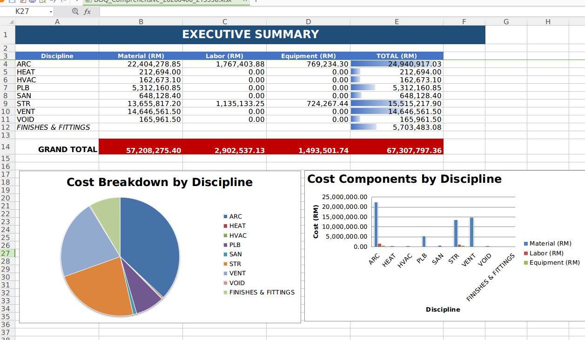
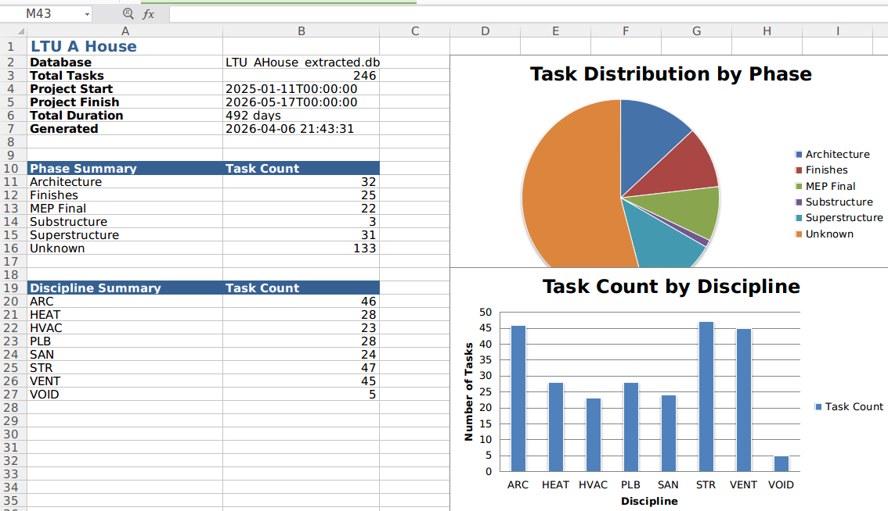
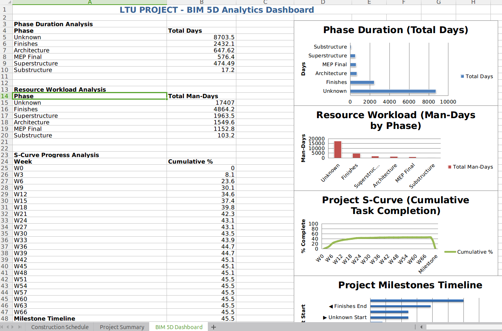
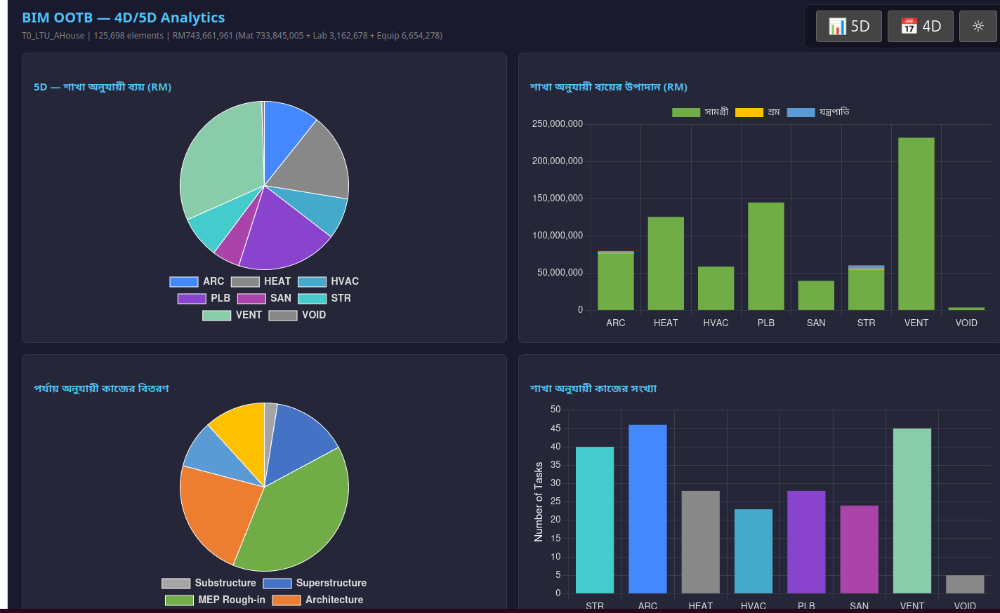
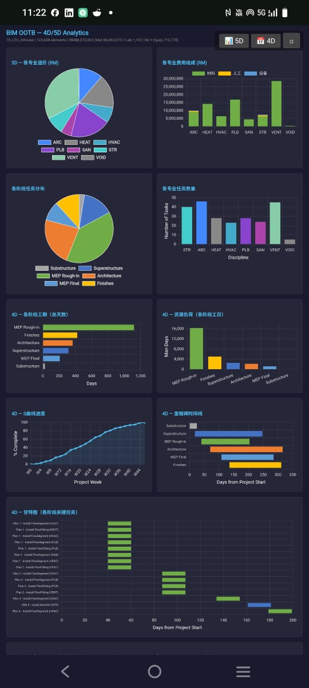

nD BIM Analysis — 4D Schedule, 5D Cost, 6D Carbon, 7D FM, 8D Safety¶
Foundation: Enterprise · LTU A-House · DATA_MODEL
What We Have¶
The Federated Model DB (_extracted.db) drives all nD analytics
from a single SQLite file. All IFC disciplines live in this one DB.
No IFC file open, no geometry iterator, no RAM spike.
Scale proof: 1,063,563 elements across 787 buildings — all 5 dimensions in 8.7 seconds.
Proven Results (LTU A-House — 125,997 elements, 8 disciplines)¶
5D Costing — Executive Summary with Material + Labour + Equipment per discipline. Grand Total: RM 67M (CIDB 2024 standard rates). 133 QTO line items. Generated in ~2 seconds.

4D Schedule — 224 construction tasks, precedence-linked by phase. Substructure → Superstructure → MEP Rough-in → Architecture → MEP Final → Finishes.

4D Dashboard — S-Curve, resource workload, milestones — all from one query on the DB.

The nD Engine¶
A single abstract engine reads user-editable JSON templates and applies formulas
to any IFC class found in the extracted DB. Zero hardcoded IFC classes — all configuration
lives in templates/. Users edit JSON, the engine applies formulas.
python3 scripts/nD_engine.py <database_path> --all
python3 scripts/nD_engine.py <database_path> --dims 4D,5D
python3 scripts/nD_engine.py <database_path> --dims 6D # auto-runs 5D if needed
| Dimension | Template | Input | Output Table |
|---|---|---|---|
| 4D Schedule | templates/4D_phases.json |
elements_meta |
construction_schedule |
| 5D Costing | templates/5D_rates.json |
elements_meta + elements_rtree |
simple_qto |
| 6D Carbon | templates/6D_carbon.json |
elements_meta + simple_qto |
carbon_audit |
| 7D FM/Lifecycle | templates/7D_lifecycle.json |
elements_meta |
asset_register |
| 8D Safety | templates/8D_safety.json |
elements_meta + construction_schedule |
hazard_register |
Master formula file: templates/nD_formulas.json — measurement rules, cost formulas,
dimension registry.
Self-Healing Pipeline¶
If a dimension needs a prerequisite table that doesn't exist, the engine auto-generates
it. Request 6D on a fresh DB → engine detects simple_qto missing → runs 5D first →
then 6D. Request 8D → auto-runs 4D for the schedule. No manual ordering needed.
How IFC Data Becomes nD Data¶
Every dimension derives from the same elements_meta table that extractIFCtoDB.py
creates during IFC extraction. The key column is ifc_class — the JSON templates map
each class to phase/cost/carbon/lifecycle/hazard rules.
IFC file ─→ extractIFCtoDB.py ─→ elements_meta (ifc_class, discipline, storey, ...)
│
┌──────────┬───────┬───────┼───────┬───────┐
│ │ │ │ │ │
4D 5D 6D 7D 8D Viewer
phase cost/qty carbon asset hazard 3D mesh
from from from from from
ifc_class ifc_class ifc_class ifc_class ifc_class
│ │ │ │ │
templates/ JSON ← user-editable
If an extracted DB is empty (0 bytes, no tables), re-run extraction:
python3 scripts/extractIFCtoDB_open.py path/to/model.ifc path/to/output_extracted.db
Fleet Test Results — 37 Buildings + 1M City¶
37/37 individual buildings PASS. Sandbox city-wide 1M PASS. Zero failures.
How to Run Tests¶
# Unit test — single building (28 witnesses)
python3 scripts/test_nD_engine.py
python3 scripts/test_nD_engine.py --db DAGCompiler/lib/input/Hospital_extracted.db
# Fleet test — all 37 buildings
python3 scripts/test_nD_fleet.py
# Fleet + 1M sandbox city (takes ~14 seconds total)
python3 scripts/test_nD_fleet.py --include-sandbox
Output locations:
- Tables written into the extracted DB itself (temp copy during tests)
- Fleet report: scripts/nD_fleet_report.txt
- Debug log: scripts/nD_engine_log.txt
- For production runs, tables are written directly into the target _extracted.db
Test Witnesses¶
| Witness | What it proves |
|---|---|
| W-TEMPLATE | All 6 JSON templates load, all have _default fallback |
| W-5D_COSTED | Every IFC class gets a cost (zero uncosted) |
| W-4D_NO_UNKNOWN | Zero tasks with phase='Unknown' (was 64% Unknown before) |
| W-6D_CARBON | Carbon total > 0 and cross-checks with SUM(qty × factor) |
| W-7D_ASSETS | Asset count == element count (1:1 mapping) |
| W-8D_SAFETY | Every hazard row has a risk_level |
| W-AUTO_PREREQ | Requesting 6D auto-generates 5D if missing |
Sandbox City — 1,063,563 Elements, 8.7 Seconds¶
The sandbox contains 787 buildings (13 CBD archetypes + suburb tile instances) across 48 IFC classes and 6 disciplines.
5D — City-Wide Cost: RM 1.59 Billion¶
| Discipline | QTO Lines | Elements | Cost (RM) |
|---|---|---|---|
| ARC | 576 | 686,396 | 1,407,873,431 |
| MEP | 192 | 243,304 | 98,035,356 |
| STR | 130 | 123,427 | 76,154,312 |
| ELEC | 33 | 6,129 | 2,922,681 |
| FP | 17 | 3,709 | 1,854,500 |
| ACMV | 9 | 598 | 299,000 |
Top 10 most expensive IFC classes (city-wide):
| IFC Class | Elements | Cost (RM) |
|---|---|---|
| IfcSlab | 39,392 | 821,441,213 |
| IfcDoor | 46,064 | 131,282,400 |
| IfcWallStandardCase | 45,216 | 130,362,836 |
| IfcWindow | 59,043 | 93,287,940 |
| IfcFlowTerminal | 20,707 | 72,474,500 |
| IfcCovering | 131,595 | 48,305,718 |
| IfcOpeningElement | 78,286 | 39,143,000 |
| IfcColumn | 7,731 | 37,227,725 |
| IfcMember | 47,498 | 32,234,992 |
| IfcBuildingElementProxy | 37,829 | 32,154,650 |
4D — City-Wide Schedule: 957 Tasks¶
| Phase | Tasks | Total Duration (days) |
|---|---|---|
| Substructure | 15 | 366 |
| Superstructure | 211 | 16,004 |
| MEP Rough-in | 142 | 13,203 |
| Architecture | 447 | 63,308 |
| MEP Final | 84 | 4,169 |
| Finishes | 58 | 13,762 |
Zero Unknown phase. Every IFC class mapped via template or _default fallback.
6D — City-Wide Carbon: 434,460 tCO2e¶
| Discipline | Embodied Carbon (tCO2e) |
|---|---|
| ARC | 424,239 |
| STR | 6,603 |
| MEP | 3,249 |
| FP | 185 |
| ELEC | 154 |
| ACMV | 30 |
7D — City-Wide Asset Register: 1,063,563 Assets¶
| Discipline | Assets | Avg Lifespan | Service Interval |
|---|---|---|---|
| ARC | 686,396 | 29 yr | 12 mo |
| MEP | 243,304 | 23 yr | 7 mo |
| STR | 123,427 | 39 yr | 41 mo |
| ELEC | 6,129 | 15 yr | 10 mo |
| FP | 3,709 | 30 yr | 6 mo |
| ACMV | 598 | 30 yr | 6 mo |
8D — City-Wide Safety: 957 Hazard Entries¶
| Risk Level | Entries | Elements |
|---|---|---|
| LOW | 713 | 985,450 |
| MEDIUM | 86 | 39,392 |
| HIGH | 147 | 38,492 |
| VERY HIGH | 11 | 229 |
Browser 4D/5D HTML — Zero-Install Analytics¶
The nD engine outputs feed a fully browser-native HTML analytics page (boq_charts.html).
No server. No install. Open the link — charts render, Excel exports.
Performance¶
| Step | Mechanism | Speed |
|---|---|---|
| DB load (first visit) | Fetch from OCI → written to IndexedDB | Network-bound |
| DB load (return visit) | Read from IndexedDB (bim_ootb_cache) |
~0ms — local |
| DB load (after IFC import) | IndexedDB import:// key — no OCI needed |
~0ms — local |
| 9 charts rendered | sql.js WASM queries + Chart.js | < 1 second |
| 5D Excel export | ExcelJS in-browser, no server | 2–3 seconds |
| 4D Excel export | ExcelJS in-browser, no server | 1–2 seconds |
After the first load, the DB is cached in IndexedDB. Subsequent visits and every Excel export
read locally — zero network round-trip. §CHARTS_DB_SOURCE source=idb|import|oci is logged
to the console and embedded in the downloaded export log for auditability.
Browser HTML mode ready — here in exotic language (Localisation).

Mobile mode granted on-the-fly.

No Other Player Does This¶
What the industry charges for nD analytics¶
| Capability | Industry tool | Cost per seat/yr | Our speed |
|---|---|---|---|
| 5D BOQ from BIM | CostX, Cubicost, iTWO | $10-50K | 8.7s for 1M elements |
| 4D Schedule from BIM | Synchro, Navisworks, Asta | $5-15K | same run |
| 6D Carbon from BIM | OneClick LCA, Tally | $5-15K | same run |
| 7D Asset register | Maximo, Archibus, Planon | $20-100K | same run |
| 8D Safety register | Manual spreadsheets | Weeks of HSE time | same run |
| All 5 dimensions combined | $60-180K/yr | 8.7 seconds, free |
What makes this different¶
-
Speed — 1M elements, 5 dimensions, 8.7 seconds. Commercial tools take hours per dimension on models this size. Most cannot even load 1M elements.
-
All dimensions in one pass — Commercial tools are siloed. 4D is one vendor, 5D another, 6D another. Each needs its own model import, its own licence. We run all 5 from the same SQLite file in one command.
-
User-modifiable templates — JSON files, not proprietary rate databases locked behind vendor UIs. A QS edits
5D_rates.jsonin any text editor. A sustainability consultant edits6D_carbon.json. No vendor lock-in, no format conversion. -
Self-healing dependencies — Request 6D, engine auto-generates 5D. Request 8D, engine auto-generates 4D. No manual pipeline orchestration.
-
Open source — Zero licence cost. SQLite databases. Python scripts. JSON templates. Everything auditable, everything modifiable.
Template Editing — How to Customize¶
All rules live in JSON files under templates/. Edit with any text editor.
Editing Templates¶
The JSON templates are designed to be human-readable. Each entry maps an IFC class
to its nD properties. The _default key catches any unmapped class.
Direct editing (any text editor — VS Code, nano, Notepad++):
# Edit material rates
code templates/5D_rates.json
# Edit carbon factors
code templates/6D_carbon.json
Validation — run the engine after editing to verify:
python3 scripts/nD_engine.py mydb.db --dims 5D
# Check scripts/nD_engine_log.txt for §5D_RATE lines showing which rates applied
Country-specific templates — copy the defaults and swap rates:
cp -r templates/ templates_UK/
# Edit templates_UK/5D_rates.json — change currency, rates to BCIS/RICS
# Edit templates_UK/6D_carbon.json — change factors to BREEAM
python3 scripts/nD_engine.py mydb.db --all --templates templates_UK/
Adding a New IFC Class¶
Add one entry per template:
// 4D_phases.json → ifc_class_rules:
"IfcNewClass": {"phase": "MEP Rough-in", "sequence": 5, "predecessors": ["IfcSlab"],
"resource": "HVAC_TECH", "productivity": 12.0}
// 5D_rates.json → material_rates:
"IfcNewClass": {"rate": 250.00, "unit": "M", "spec": "Your specification"}
// 6D_carbon.json → carbon_factors:
"IfcNewClass": {"factor": 15.0, "per": "M", "note": "Source reference"}
// 7D_lifecycle.json → lifespan_rules:
"IfcNewClass": {"lifespan_years": 20, "warranty_months": 24,
"service_interval_months": 6, "note": "Maintenance note"}
Measurement Rules¶
In nD_formulas.json, IFC classes are grouped by how they're measured:
- linear: height from bounding box (maxZ - minZ) → meters
- area: footprint from bounding box (dX * dY) → m²
- volume: full bounding box (dX * dY * dZ) → m³
- count: element count → EA (default for unmapped classes)
nD Dimensions — What Each Produces¶
4D — Construction Schedule¶
Phase mapping + productivity rates → task durations → Gantt-ready data.
Calendar: Mon-Sat working, Sunday off, 8hr/day (configurable in 4D_phases.json).
5D — Cost Estimation (BOQ)¶
Material rates + labor productivity + equipment allocation → total cost per element. Currency: MYR (Malaysian Ringgit), CIDB 2024 rates. Swap template for other countries.
6D — Sustainability / Carbon Audit¶
Embodied carbon factors (ICE Database v3.0) → kgCO2e per element → project total. Operational carbon: Malaysia grid factor 0.585 kgCO2/kWh (TNB 2024).
7D — Facility Management / Asset Lifecycle¶
Per-element asset register: GUID → asset tag, warranty, service interval, replacement year. Source: RICS Building Maintenance Guide + JKR Malaysia standards.
8D — Safety / Hazard Register¶
Phase × IFC class → hazard classification, risk level, PPE requirements, permit flags. Source: DOSH Malaysia OSHA 1994, CIDB Site Safety Handbook.
Debug Logging¶
Every run produces scripts/nD_engine_log.txt with §-prefixed log lines:
§ENGINE_START, §ENGINE_DB, §ENGINE_DIMS — session metadata
§TEMPLATE_LOADED — which templates were read
§5D_IFC_CLASSES, §5D_MEASURE — per-class measurement type resolution
§5D_INSERT, §5D_RATE — what was inserted and at what rate
§5D_UNCOSTED — IFC classes with no rate (uses _default)
§4D_DEFAULT — classes using _default fallback (was "Unknown")
§4D_PHASE — task count per phase
§6D_ROW — per-row carbon calculation
§7D_ELEMENTS — total asset count
§8D_ROW — per-row hazard classification
§ENGINE_DONE — summary with row counts
Read the log after every run. Exit code alone is not evidence.
Architecture¶
IFC files ──→ extractIFCtoDB.py ──→ _extracted.db
│
┌────────────────────────┼────────────────────────┐
│ │ │
nD Engine Bonsai Viewer Java Backend
(scripts/nD_engine.py) (bbox + mesh) (REST + Excel)
│ │ │
┌──────────┼──────────┐ │ │
│ │ │ │ │ 3D viewport /api/boq/
4D 5D 6D 7D 8D 125K elements /api/schedule/
schedule qto carbon asset safety smooth nav
│
JSON Templates
(templates/*.json)
Files¶
| File | Role |
|---|---|
scripts/nD_engine.py |
Abstract nD engine — reads templates, queries DB, writes tables |
scripts/test_nD_engine.py |
Unit test — 28 witnesses on single building |
scripts/test_nD_fleet.py |
Fleet test — all buildings + sandbox |
scripts/nD_fleet_report.txt |
Fleet test results (regenerated each run) |
scripts/nD_engine_log.txt |
Debug log (regenerated each run) |
templates/nD_formulas.json |
Master: dimension registry, measurement rules, formulas |
templates/4D_phases.json |
Phase sequence, predecessors, productivity, calendar |
templates/5D_rates.json |
Material, labor, equipment rates (MYR CIDB 2024) |
templates/6D_carbon.json |
Embodied carbon factors (ICE Database v3.0) |
templates/7D_lifecycle.json |
Warranty, service interval, lifespan (RICS/JKR) |
templates/8D_safety.json |
Hazard class, risk matrix, PPE (DOSH/CIDB) |
scripts/schedule_database_schema.py |
Schema for construction_schedule table |
Legacy (still functional, superseded by nD engine)¶
| File | Role |
|---|---|
scripts/simple_qto_extract.py |
Original 5D — hardcoded rates |
scripts/schedule_generator.py |
Original 4D — hardcoded phase rules |
What's Done¶
- Excel export — Township Excel: Cover Sheet, Executive Summary (archetype × instances),
30 per-archetype BOQ sheets, Schedule - Township. Auto-generated by
nD_engine.py --all. - Township mode — auto-detects multi-building DBs (
COUNT(DISTINCT building) > 1). Archetype dedup: suburb tilesS{row}_{col}_{type}→ archetype, CBDT0_{name}→ name. Compute BOQ once per archetype, multiply by instance count. 786 buildings → 30 archetypes. All 5 output tables (simple_qto, construction_schedule, carbon_audit, asset_register, hazard_register) now includebuildingcolumn. Single-building DBs unaffected. - 28/28 unit tests PASS — backwards compatible, no regression.
4D Ghost Glass — Live Construction Animation (S240b)¶
"Watch your building get built."
The Gantt chart (boq_charts.html) now drives a live construction animation in the 3D viewer via BroadcastChannel. Two browser tabs, side by side — drag a timeline scrubber on the Gantt and the building constructs itself in real time.
How It Works¶
- User opens the viewer (Tab 1) and BOQ charts (Tab 2) for the same building
- The Gantt chart shows all construction tasks as horizontal bars, colour-coded by phase
- An orange vertical scrub line overlays the Gantt — drag it left/right to scrub time
- On first touch (Day 1+), the building turns into a glass shell (0.03 opacity)
- As the scrubber crosses each task's start day, those elements snap to solid with a bright glow
- Elements already built restore to normal solid material — the building fills in progressively
- Drag back to Day 0 → building fully restores to normal
Visual States¶
| State | Appearance | When |
|---|---|---|
| GLASS | Near-invisible shell (0.03 opacity, pale blue) | Future — not yet constructed |
| ACTIVE | Bright glow, shines through all geometry (depthTest:false) |
Currently being constructed |
| BUILT | Solid original material (full opacity) | Already constructed |
Active elements use rotating highlight colours (orange → green → red → yellow → cyan)
cycling per task, so MEP rough-in is visually distinct from structural steel. The glow
uses depthTest:false (the same technique as clash detection) so pipes and ducts behind
walls are visible through the structure.
Controls¶
[ ▶ Play ] [ ⏸ Pause ] Speed: [1×] [2×] [4×] [8×] Day 42 / 312 Superstructure: Beam (STR)
- Drag on Gantt — scrub the orange line across the timeline
- Play button — auto-advance through all tasks at selected speed
- Day 0 — building fully restores (no glass, normal materials)
- Click a Gantt bar — highlights just that task's elements in the viewer
- Copy URL — share the exact chart view with anyone
CTFL Audit Gate¶
Before animation starts, an 8-check audit validates the schedule quality:
| Check | What |
|---|---|
| COVERAGE | Every IFC class maps to a SEQUENCE_RULE (no defaults) |
| PHASE_ORDER | No phase inversions per storey |
| STOREY_ORDER | Bottom-up within each phase |
| DURATION | All tasks 1–120 days |
| OVERLAP | No same-trade + same-class overlap on same storey |
| TOTAL | Project duration ≤ 3× serial sum |
| LABELS | No truncated or undefined labels |
| GUIDS | Every task resolves to ≥1 element GUID |
Failed checks show a yellow warning banner. Console §4D_AUDIT_* tags show details.
Architecture¶
boq_charts.html index.html (viewer)
┌──────────────────┐ ┌──────────────────┐
│ generateSchedule │ │ ghostglass.js │
│ audit4DSchedule │ BroadcastChannel │ setupGhostGlass │
│ GUID resolution │──── bim_4d ──────►│ makeGlass/Active │
│ scrubber + Play │ 4D_PLAY/SEEK/RESET│ makeBuilt/restore│
│ Copy URL button │ │ material cache │
└──────────────────┘ └──────────────────┘
rates.js main.js
SEQUENCE_RULES BroadcastChannel
LABOR_RATES listener +
PHASE_COLORS delegation
No server. No WebSocket. Pure BroadcastChannel between same-origin tabs.
ghostglass.js is a pure renderer — no internal timer. The Gantt controls all pacing.
What This Replaces¶
| Capability | Commercial tool | Cost/yr | Our approach |
|---|---|---|---|
| 4D playback | Synchro Pro | $25K | Ghost glass animation |
| Construction sim | Navisworks TimeLiner | $8K | Drag scrubber on Gantt |
| Phase visualization | Custom Gantt tools | $5-15K | BroadcastChannel sync |
| Total | $38-48K | Free, browser-native |
Files¶
| File | Role |
|---|---|
deploy/dev/ghostglass.js |
Glass-to-solid animation engine |
deploy/dev/boq_charts.html |
Audit, GUID resolution, scrubber, Play/Pause |
deploy/dev/main.js |
BroadcastChannel listener, ghostglass delegation |
deploy/dev/rates.js |
SEQUENCE_RULES, LABOR_RATES, PHASE_COLORS (50+ IFC classes) |
deploy/dev/tools.js |
Hover preserves 4D phase colours |
deploy/dev/tests/specs/22-4d-audit.spec.js |
8 Playwright tests for audit gate |
4D Time Machine — Interactive Construction Playback¶
The Time Machine (time_machine.js) brings 4D simulation directly into the 3D viewer.
No separate app, no schedule file import, no Blender rendering. One button, any IFC model.
How It Works¶
- User drops any IFC file into the viewer
- Presses ⏳ in the toolbar
kernel_opstable is auto-populated with a weighted construction sequence derived from:SEQUENCE_RULES— phase assignment per IFC class (Substructure → Superstructure → MEP → Architecture → Finishes)LABOR_RATES— productivity per trade (units/day → seconds per element)- Spatial sort —
element_transforms.center_z(bottom-up), then X/Y - Storey rank — basements first, ground floor, upper levels, roof last
- The building constructs itself from an empty site — element by element
Playback Controls¶
| Button | Action |
|---|---|
| ◀◀ | Jump to empty site (hour 0, day 1) |
| ◀ | Deconstruct backwards at mode speed |
| ■ | Stop — slider becomes active for scrubbing |
| ▶ | Build forward from current position |
| ▶▶ | Jump to fully built |
DAY / HR / MIN — controls both playback speed and slider scope:
- DAY mode: playback advances 1 hour per tick (24 ticks = 1 day). Slider scrubs across project days.
- HR mode: playback advances 1 minute per tick. Slider = 24 hours within the stopped day.
- MIN mode: finest grain. Slider = 60 seconds within the stopped minute.
Visual States¶
Each element exists in one of three visual states:
- Future (not yet placed) — invisible
- Frontier (being installed) — orange glow, see-through,
depthTest: false,renderOrder: 999 - Recently placed (within 3 ticks) — faded yellow linger, then snaps to solid
- Built — solid, original material restored
Weighted Durations & Parallel Trades¶
Element install time is derived from LABOR_RATES.productivity:
| Trade | Example Class | Productivity | Install Time |
|---|---|---|---|
| STEEL_ERECTOR | IfcColumn | 6/day | ~80 min |
| CONCRETE_GANG | IfcSlab | 35/day | ~14 min |
| MASON | IfcWall | 12/day | ~40 min |
| ELECTRICIAN | IfcOutlet | 25/day | ~19 min |
| CARPENTER | IfcDoor | 6/day | ~80 min |
Parallel trades: different phases on the same storey overlap when the predecessor
phase finishes. MEP rough-in starts on ground floor while superstructure continues on
upper floors. This matches the Gantt chart bar layout in boq_charts.html.
Kernel Ops — The Fossil Record¶
Every construction event is logged in the kernel_ops SQLite table:
CREATE TABLE kernel_ops (
id INTEGER PRIMARY KEY,
timestamp INTEGER NOT NULL, -- start time (ms)
op_type TEXT NOT NULL, -- 'ELEMENT_PLACE', 'VIEW_FILTER', 'ELEMENT_PICK', ...
parameters TEXT NOT NULL, -- JSON: {phase, cls, name, storey, _end_ts}
input_guids TEXT, -- JSON array of affected GUIDs
output_guid TEXT, -- primary element GUID
undone INTEGER DEFAULT 0
);
The same table also captures live user activity:
- ELEMENT_PICK — element clicked in viewer
- VIEW_FILTER — storey or discipline filter toggled
- SECTION_CUT — section plane saved
- GRID_MOVE — grid line dragged in 2D editor
This makes kernel_ops a complete audit trail of both synthetic construction
and real user interaction — queryable, replayable, exportable.
Performance¶
The time machine is pure data playback — no geometry upload, no shader recompilation.
Each frame toggles mesh.visible and swaps a cloned material for the frontier highlight.
InstancedMesh elements use the zero-scale matrix technique (same as ghostglass).
Cost: one scene.traverse() per frame. GPU load identical to a static scene.
Shareable 4D Links¶
The Time Machine supports URL parameters for shareable construction playback:
| URL Parameter | Behaviour |
|---|---|
?tm=1 |
Open viewer with Time Machine panel active |
?tm=play |
Open and auto-play construction from empty site |
The 🔗 Share button (top-left of panel) copies the current viewer URL with ?tm=play appended — recipient opens the link, the building loads, and construction plays automatically. Zero setup, one click.
Example:
.../viewer/viewer.html?db=buildings/Duplex_extracted.db&tm=play
Architecture¶
⏳ press
│
├─ kernel_ops empty? → injectGantt()
│ ├─ reads elements_meta + element_transforms
│ ├─ sorts: SEQUENCE_RULES.sequence → storeyRank → center_z
│ ├─ applies LABOR_RATES productivity → weighted duration per element
│ ├─ schedules: sequential within (phase, storey), parallel across phases
│ └─ writes ELEMENT_PLACE ops with start_ts + _end_ts
│
└─ kernel_ops populated → loadOps() → playback ready
├─ renderAtTime(cursor) — traverse scene, set visibility + highlights
├─ playTick() — advance cursor by tickMs(), loop
└─ slider scrub — maps DAY/HR/MIN to cursor position
Files¶
| File | Role |
|---|---|
deploy/dev/time_machine.js |
Time machine panel, injection, playback, highlighting |
deploy/dev/kernel_ops.js |
commitOp(), undo/redo, replay infrastructure |
deploy/dev/precision_cam.js |
Precision camera (fine move + zoom reset) for detail inspection |
deploy/dev/picking.js |
Logs ELEMENT_PICK to kernel_ops |
deploy/dev/panels.js |
Logs VIEW_FILTER to kernel_ops |
deploy/dev/section_cut.js |
Logs SECTION_CUT to kernel_ops |
deploy/dev/rates.js |
SEQUENCE_RULES, LABOR_RATES — drives injection weighting |
Next Steps¶
- Browser nD engine — port to JavaScript for BIM OOTB Phase 3.
Same JSON templates, same SQL queries, same output tables — runs in browser via sql.js (WASM).
User drags custom
5D_rates.json→ browser re-runs 5D → downloads Excel. Zero server. See BIM_Designer_Browser.md §Phase 3 for full feature list. - Excel export (browser) — SheetJS generates XLSX client-side from nD output tables. Replaces Java backend Excel generation for review/stakeholder use cases.
- Community templates — UK BCIS rates, US RSMeans, BREEAM carbon, LEED scoring
- Web template editor — HTML form that loads/validates/saves JSON templates
- SMM2 work sections — map IFC classes to CIDB standard work section numbering for client-facing BOQ
- Editable Excel (server) — Java backend generates .xlsx with formulas (
=qty × unit_rate) for advanced users - REST endpoints —
/api/boq/{building}/excel,/api/schedule/{building}/excel(Phase 4 backend only)
Copyright (c) 2025-2026 Redhuan D. Oon. MIT Licensed.